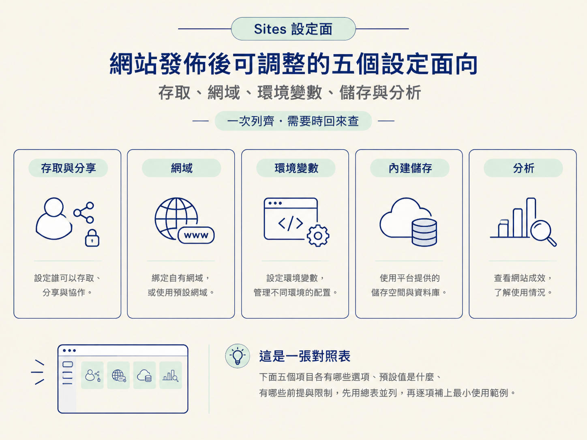
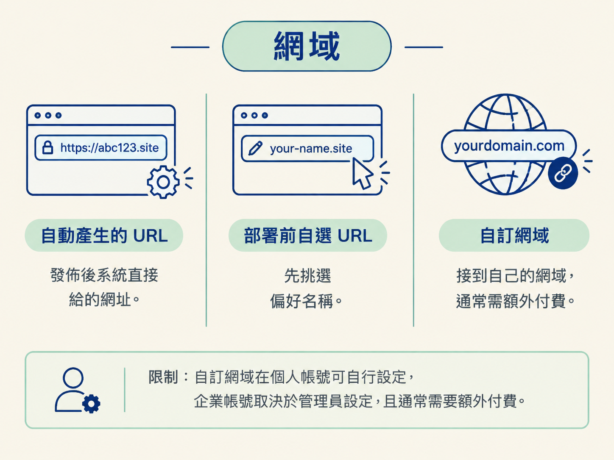

「設定面」指的是：網站發佈之後，你還能在上面調整的選項集合。它解掉的問題很單純：網站推出去之前，總要決定「誰看得到」「掛在哪個網址」「金鑰放哪」「資料存哪」「怎麼看有沒有人來」。與其每次發佈時重新想一遍，不如把這些選項一次列齊，需要時回來查。
這不是一段照著做的流程，是一張對照表。下面五個項目各有哪些選項、預設值是什麼、有哪些前提與限制，先用總表並列，再逐項補上最小使用範例。

| 項目 | 選項／值 | 限制與前提 |
|---|---|---|
| 存取與分享 | 公開給網際網路上任何人；企業帳號可用 SSO；可加入 workspace 群組；可用 ChatGPT identity 登入；也可帶入自己的驗證供應商 | 個人帳號可自行設公開；企業帳號的可見範圍取決於管理員允許什麼 |
| 網域 | 自動產生的 URL；部署前自選 URL；自訂網域（custom domain） | 個人帳號可自行設定自訂網域；企業帳號需視管理員而定；自訂網域通常需額外付費 |
| 環境變數 | API 金鑰與第三方服務設定 | 用來接上內建儲存與驗證以外的外部服務；實際需要哪些變數取決於接了哪些服務 |
| 內建儲存 | 結構化儲存（類似 MongoDB）；blob 儲存（大型檔案） | 不需手動指定，Codex 依 prompt 與需求自動挑選 |
| 分析 | 流量隨時間變化；訪客數；熱門頁面 | 基本款，適合大多數網站，非完整分析平台 |
可見範圍由帳號類型決定。個人帳號可把網站設成公開，任何人在網際網路上都能看。企業帳號在公開之外另有三種做法：使用內建的 SSO、把 workspace 中既有的團隊群組加入有權限的名單、讓使用者以 ChatGPT identity 登入。若需要其他驗證方式，也可帶入自己的驗證供應商。
最小使用情境：在網站的分享設定裡，把一個原本私人的網站改成公開，取得一組對外可見的位址；企業帳號下，則改為把某個 workspace 群組加入存取名單。
限制：企業帳號的網站最終誰看得到，取決於管理員允許到什麼程度；個人帳號由自己設定。
網域有三種狀態。自動產生的 URL 是發佈後系統直接給你的一組網址。部署前自選 URL 是在部署前先挑一個自己想要的名稱，前提是該名稱還沒被用走。自訂網域（custom domain） 是把網站接到自己的網域上。
最小使用情境：發佈後不滿意自動產生的網址，請 Codex 重新部署一組新的 URL；或在部署前先指定偏好名稱；或設定自訂網域。
限制：自訂網域在個人帳號可自行設定，企業帳號取決於管理員設定，且通常需要額外付費。

環境變數用來接上內建儲存與內建驗證以外的第三方服務。設定方式如同對待任何服務供應商：把 API 金鑰之類的設定值放進去。
最小使用情境：網站的某個功能需要一組第三方服務的金鑰時，把它設成環境變數。
SERVICE_API_KEY=your-key-here
SERVICE_BASE_URL=https://api.example.com限制：這些設定值是網站執行時讀取的，不寫死在頁面裡；實際要用到哪些變數，取決於網站接了哪些外部服務。
Sites 內建兩種儲存。結構化儲存放有結構的紀錄，例如類似 MongoDB 的資料。blob 儲存放大型檔案。
最小使用情境：網站要記住使用者儲存的進度，或讓使用者上傳檔案時，直接交給 Codex 處理，不必自己接資料庫供應商。
限制：不需要事先指定用哪一種；Codex 依照 prompt 與實際要建的東西自動判斷。你不需要對 Codex 說「我要 blob 儲存」或「我要結構化資料庫」。
分析提供三種資訊：流量隨時間的變化、訪客、熱門頁面。
最小使用情境：想知道剛發佈的網站有沒有人來、哪幾頁最常被看，打開網站的 analytics 即可。
限制：這是對大多數網站夠用的簡單版本，不是完整的分析平台；剛發佈的網站訪客少，數字不會多。
這份清單只列出選項與限制，不做取捨判斷。什麼時候該用 Sites、什麼時候自己架更合適，以及自動 URL、自訂網域與版本之間怎麼選，下一課會用判別條件說清楚。